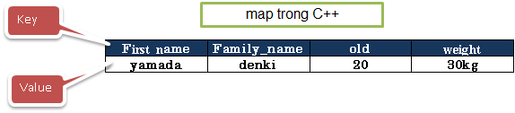
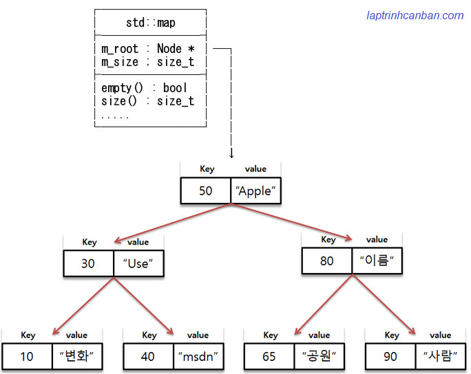

Cùng tìm hiểu về kiểu map trong C++. Bạn sẽ biết khái niệm map trong c++ là gì, cách khai báo map trong C++, cách khởi tạo map trong C++, cách truy cập phần tử của map, cũng như sự khác biệt giữa set và map trong C++ sau bài học này.
Map trong c++ là gì
Map trong C++ là một tập hợp các phần tử được sắp xếp theo thứ tự cụ thể, mà mỗi phần tử trong đó được hình thành bởi sự kết hợp của một cặp khóa và giá trị (key & value), với mỗi khóa là duy nhất trong map.
Trong map, các khóa (key) được sử dụng để sắp xếp và xác định giá trị (value) tương ứng được liên kết với nó. Mỗi khóa trong map là duy nhất và không được phép trùng lặp. Các giá trị trong map thì có thể trùng lặp, chúng có thể thay đổi giá trị, cũng như là được chèn hoặc xóa khỏi map.
Ví dụ cụ thể, một map chứa thông tin về một người sẽ gồm các khóa như name, old, weight. Tương ứng với các khóa này là các giá trị là thông tin cụ thể của người đó như sau:

Về mặt nội bộ, các phần tử trong map luôn được sắp xếp theo khóa của nó theo thứ tự cụ thể một cách nghiêm ngặt, được chỉ ra bởi đối tượng so sánh nội bộ của map. Nếu bạn thêm các phần tử mới không theo thứ tự cụ thể vào một map, chúng sẽ tự động sắp xếp lại theo khóa trước khi được lưu trữ nội bộ.
Trong C++ cũng có một loại dữ liệu khá giống với map là unordered_map khi các phần tử cũng được hình thành bởi các cặp khóa và giá trị. Tuy nhiên thì khác với unordered_map có các phần tử không được sắp xếp, thì phần tử trong một map luôn luôn được sắp xếp theo khóa của chúng.
Về mặt tốc độ xử lý thì map có khả năng tìm kiếm dữ liệu theo khóa với tốc độ cực khá cao là O(log N). Tuy nhiên thì nó vẫn kém unordered_map với tốc độ còn cao hơn là O(1), do unordered_map sử dụng bảng hash.
Tuy nhiên thì map có lợi thế khi các phần tử của nó được sắp xếp sẵn, nên chúng ta nên dùng map trong các trường hợp cần ưu tiên tính chất này.
Cấu trúc dữ liệu map trong c++
Cấu trúc dữ liệu map trong C++ thuộc dạng Red–black tree (cây đỏ đen) - một cây nhị phân, là một cấu trúc dữ liệu trong khoa học máy tính để tổ chức các thành phần dữ liệu có thể so sánh.
Cụ thể thì cấu trúc dữ liệu map trong C++ có được thể hiện như ví dụ dưới đây. Lưu ý là cấu trúc này có thể khác một chút so với thực tế cấu trúc trong môi trường máy của bạn.

Chúng ta cần đặc biệt lưu ý 3 điểm sau đây về Cấu trúc dữ liệu map trong c++:
- Trong các Node sẽ lưu giữ cặp khóa:giá trị (key & value) cũng như con trỏ của các Node con (trái, phải) của nó.
- Các giá trị trong Node thỏa mãn điều kiện giá trị của Node con bên trái < Giá trị Node cha < Giá trị của Node con bên phải. Do trong map không cho phép các khóa trùng nhau nên dấu
<được sử dụng. - Độ sâu của các Node bằng nhau và cây Node thì cân bằng.
Nhờ vào cấu trúc dữ liệu kiểu này mà chúng ta có thể tìm kiếm nhị phân trong map, qua đó có thể tìm kiếm trong map với tốc độ cao O(Log N).
std::map trong C++
std::map trong C++ là một thư viện chuẩn được sử dụng để xử lý map trong C++.
std::map được cài sẵn trong header file map và để sử dụng được chức năng này, chúng ta cần thêm dòng #include <map> vào đầu chương trình.
|
Lại nữa, namespace của std::map là std, do đó bằng cách khai báo sử dụng namespace này vào đầu chương trình mà chúng ta có thể viết gọn std::map trong chương trình như sau:
|
Khai báo map trong C++
Khai báo 1 map trong C++
Để khai báo map trong C++, chúng ta viết dòng std::map, sau đó viết kiểu dữ liệu của key và value cách nhau bởi dấu phẩy ở giữa cặp dấu <>, và cuối cùng là tên biến map như sau:
std::map<k_type, v_type> mp;
Trong đó mp là tên biến map và k_type, v_type lần lượt là kiểu dữ liệu của key và value. Cách viết sử dụng cặp dấu <> như trên được viết theo cú pháp khi sử dụng chức năng template của C++ mà chúng ta sẽ cùng học trong các chuyên đề sau.
Chúng ta có thể dùng bất cứ kiểu dữ liệu nào có trong C++ để khai báo type, ví dụ như char, int, double, hay cấu trúc hoặc class tự tạo chẳng hạn.
Lưu ý, mặc dù chúng ta có thể dùng bất cứ kiểu dữ liệu nào có trong C++ để khai báo type, tuy nhiên do trong map các phần tử cần phải được sắp xếp, nên kiểu của chúng cũng phải là kiểu dữ liệu có thể được so sánh.
Đối với các kiểu dữ liệu nguyên thủy như char, int, double chẳng hạn thì chúng vốn có thể tự so sánh được, nhưng nếu chúng ta sử dụng các kiểu dữ liệu không phải là kiểu dữ liệu nguyên thủy, ví dụ như cấu trúc hoặc class tự tạo chẳng hạn, thì bắt buộc phải tự định nghĩa toán tử so sánh nội bộ operator<() để làm rõ quan hệ lớn nhỏ giữa chúng.
Lại nữa, trong trường hợp đã khai báo namespace std vào đầu chương trình, chúng ta cũng có thể lược bỏ dòng std:: và dùng cú pháp khai báo map như sau:
using namespace std;
map<k_type, v_type> mp;
Thông thường chúng ta hay khai báo namespace std vào đầu chương trình để sử dụng tới các chức năng thông dụng khác như nhập xuất chẳng hạn, nên trong 2 phương pháp khai báo map ở trên thì phương pháp thứ 2 thường được sử dụng nhiều hơn.
Lưu ý map được khai báo với cú pháp này sẽ có 0 phần tử bên trong nó. Sau khi khai báo map kiểu này, chúng ta có thể sử dụng các hàm thành viên để có thể thêm phần tử vào nó sau này.
Ví dụ cụ thể, chúng ta khai báo 1 map thuộc kiểu dữ liệu nguyên thủy như sau:
|
Còn khi khai báo 1 map không thuộc kiểu dữ liệu nguyên thủy, ví dụ như struct chẳng hạn thì chúng ta phải tự tạo ra toán tử so sánh nội bộ operator<() để làm rõ quan hệ lớn nhỏ giữa các phần tử như ví dụ sau:
struct Person { |
Khai báo đồng thời nhiều map trong C++
Trong trường hợp cần khai báo đồng thời nhiều map trong C++, chúng ta viết các tên các biến cách nhau bởi dấu phẩy vào đằng sau std::map với cú pháp sau đây:
using namespace std;
map<k_type, v_type> name1, name2, name3, ... ;
Ví dụ cụ thể:
|
Gán giá trị cho map trong C++
Sau khi đã khai báo map, chúng ta có thể gán giá trị các phần tử vào nó bằng cách sử dụng toán tử [] với cú pháp sau đây:
mp[key] = value;
Trong đó
mplà tên biến mapkeyvàvaluelà khóa và giá trị của phần tử cần gán vào map
Ví dụ:
std::map<std::string, int> mp; |
Lại nữa, giá trị của phần tử có thể được ghi đè và thay thế bởi một giá trị mới nhiều lần như sau:
mp["Kiyoshi"] = 4; // {"Kiyoshi", 4} |
Trong trường hợp thay đổi giá trị nhiều lần, thì giá trị trong lượt thay đổi giá trị cuối cùng sẽ được sử dụng làm giá trị phần tử.
Khởi tạo map trong C++
Ngoài cách khai báo rồi gán giá trị cho map sau đó thì chúng ta cũng có thể khởi tạo map và gán luôn giá trị ban đầu cho map.
Chúng ta khởi tạo map trong C++ cách sử dụng cặp dấu ngoặc {} với cú pháp sau đây:
std::map<k_type, v_type> mp = { {k1, v1}, {k2, v2}, {k3, v3}, ...};
Trong đó
mplà tên biến mapk_type, v_typelà kiểu dữ liệu của key và valuek,vlà các cặp key và value
Lưu ý do mỗi khóa trong map là duy nhất, nên nếu chúng ta chỉ định các phần tử có cùng khóa thì dù giá trị của chúng có giống hay khác nhau thì chỉ có duy nhất phần tử viết đầu tiên sẽ được lưu vào trong map mà thôi.
Ví dụ:
|
Kết quả:
alpha: 10 |
Trong trường hợp chỉ định các phần tử có khóa giống nhau, bất kể giá trị của chúng có giống hay khác nhau thì chỉ có duy nhất phần tử viết đầu tiên được lưu vào map như sau:
|
Truy cập phần tử trong map C++
Để truy cập phần tử trong map C++, chúng ta sử dụng toán tử [] hoặc hàm thành viên at() như sau:
Truy cập phần tử trong map C++ bằng toán tử []
Để truy cập phần tử trong map C++, chúng ta viết key của phần tử cần truy cập vào giữa cặp toán tử [] với cú pháp sau đây:
mp[key]
Trong đó
mplà tên biến mapkeylà khóa của phần tử cần truy cập trong map
Nếu như key tồn tại trong map, giá trị tương ứng của key sẽ được trả về. Tuy nhiên nếu không tồn tại, giá trị 0 sẽ được trả về
Ví dụ, chúng ta có thể truy cập và xuất giá trị của một phần tử trong map như sau:
|
Ngoài việc xuất giá trị, chúng ta cũng có thể thay đổi giá trị của một phần tử trong map với cách này. Ví dụ:
/*Khai báo và gán giá trị*/ |
Truy cập phần tử trong map C++ bằng hàm at()
Hàm at() trong C++ là một hàm thành viên trong class std:map, có tác dụng truy cập vào phần tử trong map thông qua key của nó.
Nếu như key tồn tại trong map, giá trị tương ứng của key sẽ được trả về. Tuy nhiên nếu không tồn tại, hàm at() sẽ trả về lỗi out_of_range.
Cú pháp truy cập phần tử trong map C++ bằng hàm at() trong C++ như sau:
mp.at(key);
Trong đó mp là tên map và key là khóa của phần tử cần truy cập.
Ví dụ cụ thể:
/*Khai báo và gán giá trị*/ |
Có thể thấy rõ sự khác biệt giữa cách truy cập phần tử trong map bằng hàm at() và toán tử [] chính là ở kết quả khi chỉ định một key không tồn tại trong map.
set và map trong c++
Giống với map thì kiểu set trong C++ cũng chứa các phần tử duy nhất được sắp xếp theo thứ tự trong nó. Và cấu trúc dữ liệu của 2 kiểu này cũng đều thuộc dạng cây nhị phân Red–black tree (cây đỏ đen).
Tuy vậy thì giữa chúng có 3 điểm khác biệt rất rõ ràng như sau:
- Phần tử trong set tạo bởi 1 giá trị, trong khi trong map tạo bởi một cặp khóa và giá trị.
- Phần tử trong set được sắp xếp theo giá trị của chúng, còn trong map thì theo khóa của chúng
- Vùng bộ nhớ chứa set sẽ nhỏ hơn so với một map có cùng số phần tử, do trong map ngoài giá trị thì còn lưu trữ cả key nữa
Do vậy chúng ta có thể sử dụng một trong 2 kiểu này để xử lý các đối tượng mà cần có sự sắp xếp phần tử trong nó, tùy theo nhu cầu của mình.
Tổng kết
Trên đây Kiyoshi đã hướng dẫn bạn về map trong C++ rồi. Để nắm rõ nội dung bài học hơn, bạn hãy thực hành viết lại các ví dụ của ngày hôm nay nhé.
Và hãy cùng tìm hiểu những kiến thức sâu hơn về C++ trong các bài học tiếp theo.
URL Link
https://laptrinhcanban.com/cpp/lap-trinh-cpp-co-ban/map-trong-cpp/map-trong-cpp-la-gi/
HOME › lập trình c++ cơ bản dành cho người mới học lập trình>>24. map trong c++